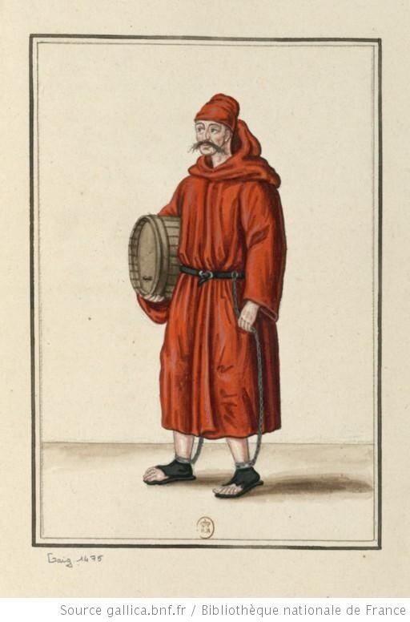

Диетология и медицина в рассматриваемую нами эпоху находились в зачаточном состоянии и не всегда давали возможность выбрать оптимальные варианты питания галерников; не могли они дать вразумительное решение и проблемы с вином, которое составляло непременную часть рациона на борту галер начиная с периода средних веков.. Морские министры Франции, подобно многим людям того времени, считали, что вино имеет значительную ценность как для питания, так и в качестве стимулирующего фактора. Поэтому особое внимание уделялось включению вина в рацион экипажа французских галер. Это поднимало боевой дух. Кроме того, вино было более безопасным напитком, чем вода. Бочка вина содержала конечно же меньше бактерий, чем бочка воды из источников вдоль побережья Италии и Испании. Поэтому интендант Монмор был близок к истине, когда выразил в 1691 году господствующее тогда мнение, что «для осужденных будет пагубным», если они будут пить меньше вина, хотя его доводы сводились к тому, что «им необходимо становиться сильнее и спокойнее в периоды длительной кампании в море».

Было широко распространено мнение, что добрая кружка вина в день необходима в качестве дополнения к казенному рациону, однако имелось несколько серьезно обоснованных мнений другого плана о полезности алкогольных напитков. Граф де Роанн выразил в 1694 году мнение, что сидр является одним из факторов, способствующих диарее; он предлагал заменить его мясом. Конечно, осознавалось также пагубное влияние злоупотребления алкоголем; королевский указ 1686 года запретил комитам и содержателям таверн давать более одной кружки вина в день любому каторжнику на галерах.
Вино стало обязательной частью ежедневного рациона лишь к середине восемнадцатого века; королевским напитком для осужденных была вода. И не только потому, что вода была дешевле. Регулярная выдача вина в рационе могла повлиять на объемы продажи спиртного в таверне на борту галеры, доход от которых шел комиту и косвенно позволял казне платить комиту меньшее жалованье. (Помните, как почти официальной была позиция руководства страны, устанавливающая мизерные зарплаты в отраслях, где имелась возможность получить побочный заработок. В торговле, например.) Вино комита всегда находилось на борту галеры; его можно было получить в таверне (cantine), которая находилась сразу под верхней палубой в центральной части галеры. По воскресеньям, сразу после мессы, таверна открывалась. Вино можно было купить по пинтам или по кружкам (вмещавшим 2 пинты-g._g.). Таверна закрывалась после вечерни. Хотя для осужденных действовало ограничение (по одной кружке в день), это положение невозможно было соблюдать, если желание следовать ему отсутствовало как у продавца, так и у покупателя.
Результатом такой деятельности был, конечно, доход комита, помощников комита и их подручных. Использовались различные механизмы для процветания этого бизнеса, в том числе предоставление кредита гребцам, имеющего целью повышение спроса на вино среди осужденных и рабов. Между каторжником и комитом существовали не обычные отношения продавец-покупатель. Комит был комбинацией надзирателя и старшего унтер-офицера, страшного босса и торговца вином с почти неограниченной властью над своими пленными покупателями. Осужденные покупатели едва ли могли торговаться по поводу цен. Не могли они и пойти в какое-либо другое место, чтобы купить вино. Более того, осужденный не мог даже безнаказанно отказаться покупать, по крайней мере какой-то минимум.
Комиты часто использовали осужденных, которым они доверяли, в качестве содержателей таверн (tavernier). Методы содержателей таверн были хорошо отработаны с целью довести доходы комита до максимума. Злоупотребления, связанные с продажей вина, были так же стары, как сами таверны, и они существовали несмотря на все распоряжения по этому вопросу, так что эти распоряжения повторялись вновь и вновь. Одно из них, изданное в 1678 году, осуждало содержателей таверн, которые «продают вино по ценам выше, чем установленный законом максимум… продают вино в емкостях, которые не являются точными и часто смешивают вино с водой для увеличения количества.» Это распоряжение было публично прочитано и прикреплено к мачтам на каждой галере. Оно предусматривало наказание как осужденных, так и комитов, если злоупотребления повторятся. Тем не менее, эти злоупотребления продолжались. Позже поступали жалобы на то, что вино не просто разбавлялось, но разбавлялось морской водой вместо пресной, что, как было заявлено, явилось «самым распространенной причиной» болезней во время кампании.
Расследование, предпринятое в 1693 году, вскрыло, что содержатели таверны каждое утро «получали main de pain» с каждой банки. «Взамен содержатель таверны давал немного вина, которое делилось среди каторжников этой банки, как члены этой банки считали нужным; в результате, одной порции хлеба недоставало [каждый день] на каждой банке.» Два года спустя донесение министру от капитана галеры шевалье де Бретель (Breteuil) показало, что этот обычай все еще существовал на галерах. Комиты требовали от осужденных продавать часть хлебного рациона держателям таверн в обмен на вино под угрозой сурового обхождения в предстоящей кампании. «Многие аргузины» вступали в сговор с комитами «вынуждая этих несчастных нести свой хлеб в таверну». Как комиты, так и аргузины «сущие дьяволы», пишет Бретель; они «ежедневно изобретают новые способы, чтобы тиранизировать и обкрадывать гребцов.» Это были суровые слова со стороны капитана. Бретель также обратил внимание, что «любимцами комитов являются те, кто работает всю неделю, [а] в субботу вечером тратит свои деньги на выпивку в таверне… [и продолжает] все воскресенье… ничем не закусывая, довольствуясь оба дня только вином.» Можно не сомневаться, говорит он, что такие люди мало чего стоят за веслами. Человек, ведущий такой образ жизни, «сжигает свою печень и желудок, становится обезвоженным, истощенным и изможденным.» В 1700 году один мемуарист рассказывал, что «большинство унтер-офицеров не имеют другого занятия, кроме как получать доход от таверн и гребцов.»